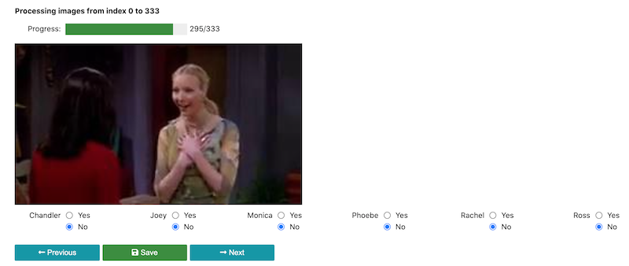

Data Labelling Tool¶
This notebook is used to label the images collected using data_collection.ipynb - read instructions below for labelling.
Sample Snapshot:

Instructions
Update START_IDX and END_IDX variables with the index assigned to you
Select Run -> Run All Cells
Scroll all the way to the bottom and begin labelling images
Note that each entry is saved on disk with every click of Prev, Save and Next buttons
If you have to step away while labelling (or your system has to restart for some reason), don’t worry about starting all over. When you return back, just run all cells and it will start with the last image you were labelling and you can continue from there
import numpy as np
import pandas as pd
import os
import matplotlib.pyplot as plt
import ipywidgets as widgets
import logging
# Set default logging level
# Change to logging.INFO to see related output
logging.basicConfig(level=logging.WARNING, force=True)
START_IDX = 3000
END_IDX = 4000
RAW_IMAGES_DIR = "../data/raw_images/"
TARGET_FILE_PATH = f"../data/processed/{START_IDX}_to_{END_IDX}.csv"
LABEL_DF_COLUMNS = ["filename", "chandler", "joey", "monica", "phoebe", "rachel", "ross",]
POSSIBLE_CHARACTERS = [
"chandler",
"joey",
"monica",
"phoebe",
"rachel",
"ross",
]
raw_image_info = []
for filename in os.listdir(RAW_IMAGES_DIR):
if filename.endswith(".jpg"):
raw_image_info.append(
(
filename,
int(filename.split("_")[0]),
int(filename.split("_")[-1][:-4]),
os.path.join(RAW_IMAGES_DIR, filename),
)
)
else:
print(f"Found non-image file {filename} in given folder {RAW_IMAGES_DIR}")
image_info_df = pd.DataFrame(
raw_image_info, columns=["filename", "video_index", "image_frame_id", "filepath"]
)
image_info_df.set_index(["filename"], inplace=True)
image_info_df.sort_values(
["video_index", "image_frame_id"], ascending=True, inplace=True
)
print(f"Found {len(image_info_df)} files to process")
if len(image_info_df[image_info_df.index.duplicated(keep="first")]):
raise ValueError(
f"Found duplicate files in {image_info_df[image_info_df.index.duplicated(keep='first')]} - check and remove duplicates"
)
image_info_df.head()
filtered_image_info_df = image_info_df.iloc[START_IDX:END_IDX]
def get_labelled_image_info():
if os.path.exists(TARGET_FILE_PATH):
labelled_image_info = pd.read_csv(TARGET_FILE_PATH)
logging.info(
f"{len(labelled_image_info)} images processed so far between indices {START_IDX} and {END_IDX}"
)
else:
logging.info(f"Creating file {TARGET_FILE_PATH} for storing label information")
labelled_image_info = pd.DataFrame(
columns=LABEL_DF_COLUMNS
)
labelled_image_info.set_index(["filename"], inplace=True)
return labelled_image_info
PROGRESS_TEMPLATE = "{0}/{1}"
curr_start_index = len(get_labelled_image_info())
progress_widget = widgets.IntProgress(
value=curr_start_index,
min=0,
max=len(filtered_image_info_df),
description="Progress:",
bar_style="success",
orientation="horizontal",
)
header_label = widgets.HTML(f"<b>Processing images from index {START_IDX} to {END_IDX}</b>")
progress_label = widgets.Label(
value=PROGRESS_TEMPLATE.format(progress_widget.value + 1, END_IDX - START_IDX)
)
radio_buttons = [
widgets.RadioButtons(
options=[("Yes", 1), ("No", 0)], value=0, description=character.title()
)
for character in POSSIBLE_CHARACTERS
]
image = widgets.Image(width=500, height=500,)
prev_button = widgets.Button(
description="Previous",
button_style="info",
tooltip="Modify previous image",
icon="long-arrow-alt-left",
)
next_button = widgets.Button(
description="Next",
button_style="info",
tooltip="Modify next image",
icon="long-arrow-alt-right",
)
save_button = widgets.Button(
description="Save", button_style="success", tooltip="Save label info", icon="save",
)
output_widget = widgets.Output()
def save_curr_app_state_to_disk():
curr_image_info = {radio_button.description.lower(): radio_button.value for radio_button in radio_buttons}
curr_image_info.update({"filename": filtered_image_info_df.iloc[progress_widget.value].name})
curr_image_df = pd.DataFrame([curr_image_info], columns=LABEL_DF_COLUMNS)
curr_image_df.set_index("filename", inplace=True)
labelled_image_info = get_labelled_image_info()
labelled_image_info = curr_image_df.combine_first(labelled_image_info)
labelled_image_info.to_csv(TARGET_FILE_PATH)
def update_prev_button(btn):
save_curr_app_state_to_disk()
if progress_widget.value != 0:
progress_widget.value -= 1
progress_label.value = PROGRESS_TEMPLATE.format(
progress_widget.value + 1, END_IDX - START_IDX
)
update_out()
def update_next_button(btn):
save_curr_app_state_to_disk()
if progress_widget.value != END_IDX:
print("in here")
progress_widget.value += 1
progress_label.value = PROGRESS_TEMPLATE.format(
progress_widget.value + 1, END_IDX - START_IDX
)
print(progress_widget.value)
update_out()
next_button.on_click(update_next_button)
prev_button.on_click(update_prev_button)
save_button.on_click(lambda btn: save_curr_app_state_to_disk())
def update_radio_buttons():
labelled_image_info = get_labelled_image_info()
curr_image_filename = filtered_image_info_df.iloc[progress_widget.value].name
if curr_image_filename in labelled_image_info.index:
for radio_button in radio_buttons:
radio_button.value = labelled_image_info.loc[curr_image_filename][radio_button.description.lower()]
else:
for radio_button in radio_buttons:
radio_button.value = 0
def update_out():
output_widget.clear_output()
if progress_widget.value == END_IDX:
with output_widget:
display("Good job, you've finished labelling the images assigned to you!")
return
update_radio_buttons()
image.value = open(
filtered_image_info_df.iloc[progress_widget.value].filepath, "rb"
).read()
with output_widget:
display(
widgets.AppLayout(
header=widgets.VBox([header_label, widgets.HBox([progress_widget, progress_label])]),
center=widgets.VBox([image, widgets.HBox(radio_buttons)]),
footer=widgets.HBox([prev_button, save_button, next_button]),
pane_heights=["70px", "350px", "40px"],
)
)
display(output_widget)
update_out()
# Use the below to combine labels generated separately and save it back as a csv
#
# import pandas as pd
# files = [
# "../data/processed/0_to_333.csv",
# "../data/processed/333_to_666.csv",
# "../data/processed/666_to_999.csv",
# "../data/processed/1000_to_1333.csv",
# "../data/processed/1333_to_2000.csv",
# "../data/processed/3000_to_4000.csv",
# ]
# results = []
# for file_path in files:
# labels = pd.read_csv(file_path)
# labels["video_index"] = labels.filename.apply(lambda v: int(v.split("_")[0]))
# labels["frame_index"] = labels.filename.apply(lambda v: int(v.split("_")[-1][:-4]))
# labels.sort_values(["video_index", "frame_index"], ascending=True, inplace=True)
# results.append(labels)
# df_combined = pd.concat(results)
# df_combined.drop(["video_index", "frame_index"], axis=1).to_csv(
# "../data/processed/labels.csv", index=False
# )